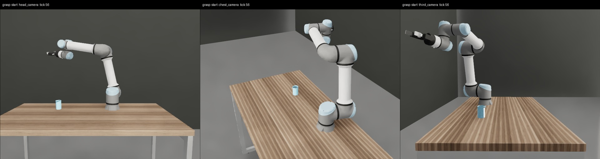
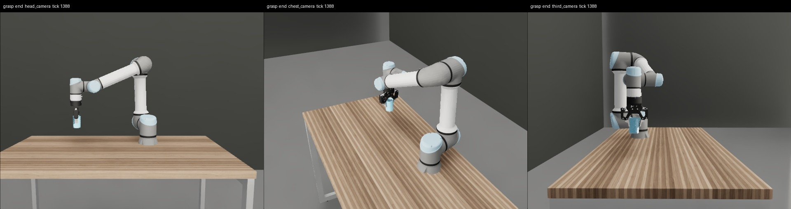

返回数据集台账
UR5e 100 mL 烧杯抓取单例
这是采用运动学实验台后，按复位时烧杯的实测位姿重新计算抓取路径的一条原生试采。实际抬升 115.48 mm，终点误差 4.54 mm，手与杯力峰 10.83 N。记录段超过 1 N 的非预期接触有 0 组。原生任务成功，数值和固定物门槛通过。量产待复核。
开录和末帧核对了桌体和机械臂底座。底座相对名义安装位置的最大平移为 0.00019 mm。图中从左到右为头部、胸部和第三视角。

开录，物理步 56
末帧，物理步 1388